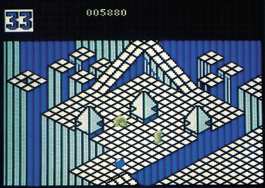
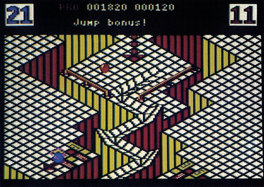
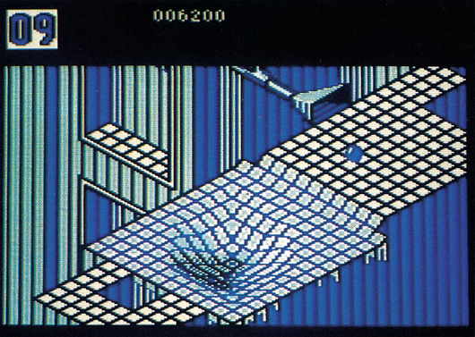

Marble Madness
Amiga-Besitzer sind seit einigen Wochen von dem Spiel Marble Madness begeistert. Jetzt gibt es eine C 64-Version.
j m Jahre 1984 erschütterte ein Spielhallen-Automat von Atari die Computerwelt. Sein Name war »Marble Madness«. Der Automat, der größtenteils von einem 19jährigen entwickelt wurde, schlug ein wie eine Bombe und wurde einer der größten Spielhallenerfolge. Nach Verhandlungen mit Atari kaufte Electronic Arts die Rechte und begann mit dem Programmieren der Heimcomputer-Umsetzung. Als erstes wurde die Amiga-Version fertiggestellt, die den Automaten fast bis ins kleinste Detail kopierte. Die C 64-Version wurde rechtzeitig zum Weihnachtsgeschäft beendet. Wir durften die Umsetzungalserste für Siein Augenschein nehmen.
Die Spielidee ist sehr einfach: Eine Murmel muß durch mehrere dreidimensionale Rennstrecken rollen. Zeitlimits und gefährliche Gegner versuchen sie daran zu hindern. Ist Ihnen das nicht spannend genug, könnenSie esauch aufein flottes Rennen zu zweit anlegen, bei dem man sich gegenseitig behindern und von der Fahrbahn schubsen kann.

Es gibt insgesamt sechs völlig unterschiedliche Rennstrecken. Die erste ist recht einfach und hat als Hindernis nur eine enge Rinne. Bei der zweiten wird es schon schwerer: Eine grimmige, schwarze Murmel, Eisflächen, steile Abhänge und die giftgrünen »Marble-Munchers« (Murmel-Mampfer) lassen nichts unversucht, den Spieler vom Kurs abzubringen. So steigert sich der Schwierigkeitsgrad von Strecke zu Strecke: Da gibt es dann den Säure-Schleim, die Staubsauger, das Katapult, die Stahlstangen, Röhrensysteme, Schlamm und eine geheimnisvolle Transport-Welle. Im fünften Level kann man dann endlich zurückschlagen: Kleinere Ausgaben der einzelnen Monster dürfen hemmungslos überrollt und zerquetscht werden. Dafür gibt es sogar Bonus-Sekunden. Der sechste Level hat es dann aber in sich: So ziemlich jede Gemeinheit, die man sich denken kann, wurde hier eingebaut.

Es ist sicherlich keine leichte Aufgabe, Marble Madness originalgetreu auf demC 64zu programmieren. Dies kann jeder bestätigen, der die Grafik und die Musik des Automaten (oder der Amiga-Version) kennt. Aber trotzdem wurde gerade in diesen beiden Punkten eine recht gute Umsetzung von den Programmierern geliefert. Dafür haben wir ein paar andere »Macken« entdeckt, die unsschwer im Magen liegen. Im zweiten Level stimmt beispielsweise die Eisfläche nicht mit derim Automaten überein. Die C 64-Version ist hier sogar so schwierig, daß wir nur mit einer Portion Glück den zweiten Level bewältigen können. Auch andere Details, wie die Staubsauger und der Säureschleim, sind nicht korrekt reproduziert worden.

Mit einem Joystick ist die Murmel nur schwer zu steuern, da häufig die Diagonalen benötigt werden. Ein Trackball leistet hier sehr gute Dienste und wird hiermit von uns als Murmel-Steuerung empfohlen.
Alles in allem eine brauchbare Umsetzung eines fantastischen Spiels, die aber nicht alle in Electronic Arts gesetzten Erwartungen erfüllt. Das Spiel ist zwar keine 100- sondern nur 80prozentige Automaten-Adaption, macht aber gerade zu zweit einen ungeheuren Spaß. Wer sich für ein ungewöhnliches, sehr komplexes Geschicklichkeitsspiel interessiert, macht mit Marble Madness sicherlich keinen schlechten Fang.
(bs)P.S. - Letzte Meldung! Electronic Arts teilte uns mit, daß die C 64-Version von Marble Madness einen geheimen siebten Level hat! Dieser ist aber nur über einen Trick zu erreichen, der
nicht verraten wird.
(bs)| Titel | Marble Madness |
|---|---|
| Spielidee | 11/15 |
| Grafik | 12/15 |
| Sound | 8/15 |
| Schwierigkeit | 12/15 |
| Motivation | 12/15 |
| Besonderheiten | Automaten-Umsetzung 2 Spieler simultan |
| Hersteller | Electronic Arts |
| Preis | 29 Mark (Kassette) 39 Mark (Disk.) |
| Bezugsquelle | Ariolasoft Postfach 1350 4830 Gütersloh |